1 · The Integumentary System
Instructional Objectives
- Describe the integumentary system.
- Discuss the various cell types found in the skin.
- Describe and contrast the various components of the skin appendages.
- Compare and contrast the sensory receptors of the skin.
1.1 · Objective 1 — Describe the integumentary system
The skin is the body's largest organ, providing protection (mechanical, microbial, UV), thermoregulation, sensation, vitamin D synthesis, and limited excretion (via sweat). It has two principal layers over a supporting bed. The outer epidermis is avascular keratinized stratified squamous epithelium, organized deep-to-superficial into the stratum basale (germinativum), stratum spinosum, stratum granulosum, stratum lucidum (only in thick/glabrous palm-and-sole skin), and the outermost dead-cell stratum corneum. Beneath it, the dermis has a superficial papillary layer (loose areolar tissue, capillary loops, touch receptors) and a deeper reticular layer (dense irregular connective tissue giving strength and elasticity). Deep to the skin, the subcutaneous tissue (hypodermis/superficial fascia) of areolar and adipose tissue binds skin to the underlying deep fascia via the retinacula cutis. Skin color reflects melanin, diet-derived carotene, and dermal hemoglobin.
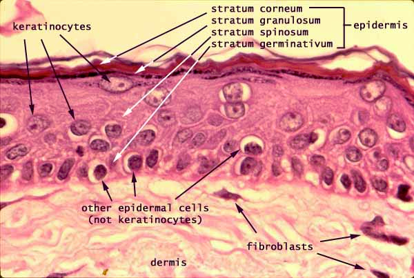
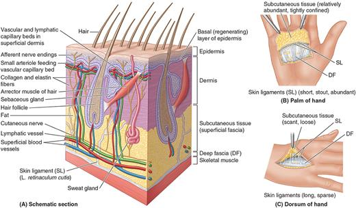
1.2 · Objective 2 — Cell types found in the skin
The epidermis is built mainly from four cell types: keratinocytes (the vast majority — produce the tough protein keratin and migrate upward as they die to form the barrier), melanocytes (in the stratum basale — produce melanin and transfer it to keratinocytes for UV protection), Langerhans (dendritic) cells (in the stratum spinosum — mobile immune cells that present antigens), and Merkel (tactile) cells (in the stratum basale — associated with sensory nerve endings for fine touch). The dermis adds connective-tissue cells: fibroblasts (produce the collagen and elastic fibers), along with macrophages, mast cells, and adipocytes in the deeper layers.
1.3 · Objective 3 — Skin appendages compared
The skin's appendages are epidermal derivatives. Hair is produced by a follicle wrapped around a hair bulb/papilla, each with a smooth-muscle arrector pili that raises the hair ("goosebumps"). Sebaceous glands are holocrine glands, usually opening into a hair follicle, that secrete oily sebum to lubricate hair and skin. Sweat glands are exocrine and come in two contrasting types: widespread eccrine glands (open directly onto the surface, the main thermoregulatory sweat glands) and apocrine glands (confined to axillae and groin, activate at puberty, contribute to body odor). Nails are plates of hardened keratin on the nail bed, growing from the nail matrix beneath the crescent-shaped lunula, sealed proximally by the cuticle (eponychium).
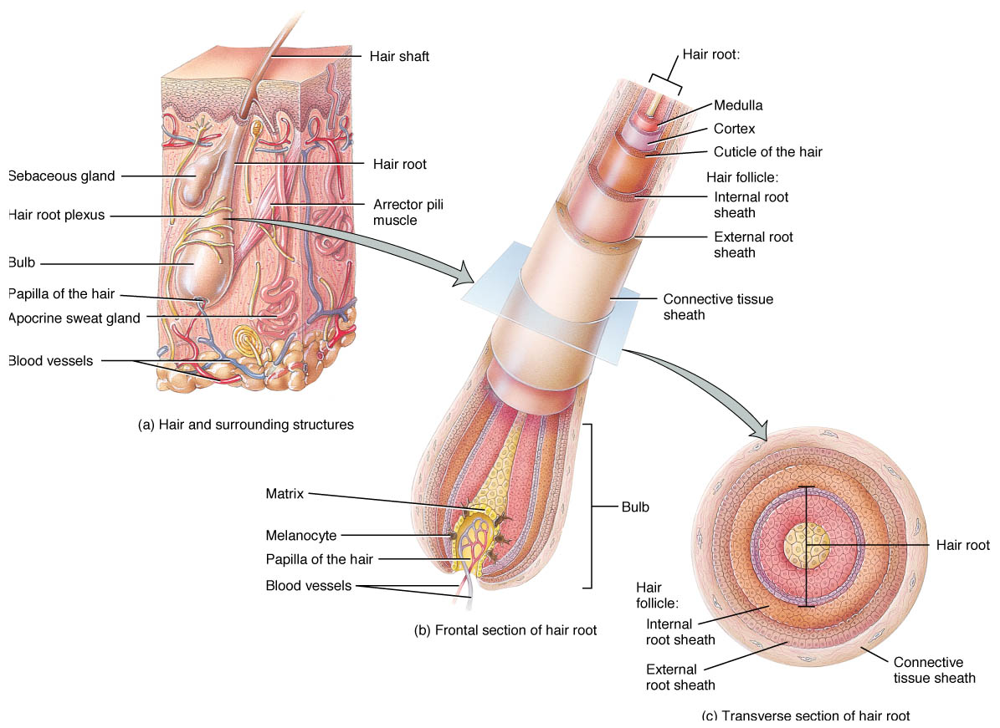
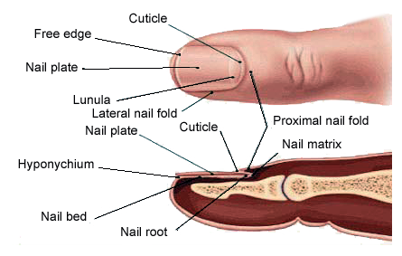
1.4 · Objective 4 — Sensory receptors of the skin compared
The skin is the body's largest sensory organ, carrying both bare and encapsulated receptors. Free nerve endings detect pain and temperature. Encapsulated mechanoreceptors differ by depth and stimulus: Meissner corpuscles (superficial dermal papillae — light touch and fine discrimination, dense in fingertips), Merkel discs (basal epidermis — sustained light touch and pressure), Pacinian (lamellated) corpuscles (deep dermis/hypodermis — deep pressure and vibration), and Ruffini endings (dermis — skin stretch and sustained pressure).
Supplementary — Blood/nerve supply & clinical correlates
The skin's blood supply runs in a deeper cutaneous plexus and superficial subpapillary plexus, whose vasodilation/constriction drives thermoregulation. Clinically: burn depth is graded first-degree (epidermis only), second-degree (into dermis, blistering), third-degree (full thickness, often painless from nerve loss); striae (stretch marks) are torn dermal collagen/elastin; and surgical incisions along tension (Langer's) lines heal with less scarring.
2 · Anatomy of the Eye and Ear
Instructional Objectives
- Identify the anatomic structures of the eye including external and internal structures.
- List the extra-ocular muscles and their corresponding nerve innervations.
- Describe the structure of the lacrimal system of the eye.
- Describe the anatomic structures of the external, middle, and inner ear.
2.1 · Objective 1 — External and internal structures of the eye
External (accessory) structures protect and support the eye: the eyebrows and eyelids (palpebrae), the conjunctiva (a thin mucous membrane lining the eyelids and covering the anterior sclera), and the lacrimal apparatus (Objective 3). Internally, the eyeball wall has three concentric tunics. The outer fibrous tunic is the white opaque sclera, continuous anteriorly with the transparent avascular cornea (which does most light refraction). The middle vascular tunic (uvea) comprises the choroid (nourishes the outer retina, absorbs stray light), the ciliary body (makes aqueous humor, adjusts lens shape for accommodation), and the iris (controls pupil size). The inner neural tunic is the retina, whose photoreceptors are rods (dim-light, peripheral, no color) and cones (color and acuity, concentrated at the cone-only fovea centralis); the optic disc, where the optic nerve exits, has no photoreceptors (the blind spot). The lens divides the interior into an anterior cavity (aqueous humor, subdivided by the iris into anterior and posterior chambers) and the larger posterior (vitreous) cavity (gel-like vitreous humor). Signals leave via the optic nerve (CN II) → optic chiasm (nasal fibers cross) → optic tract → lateral geniculate nucleus → optic radiations → primary visual cortex (occipital lobe).
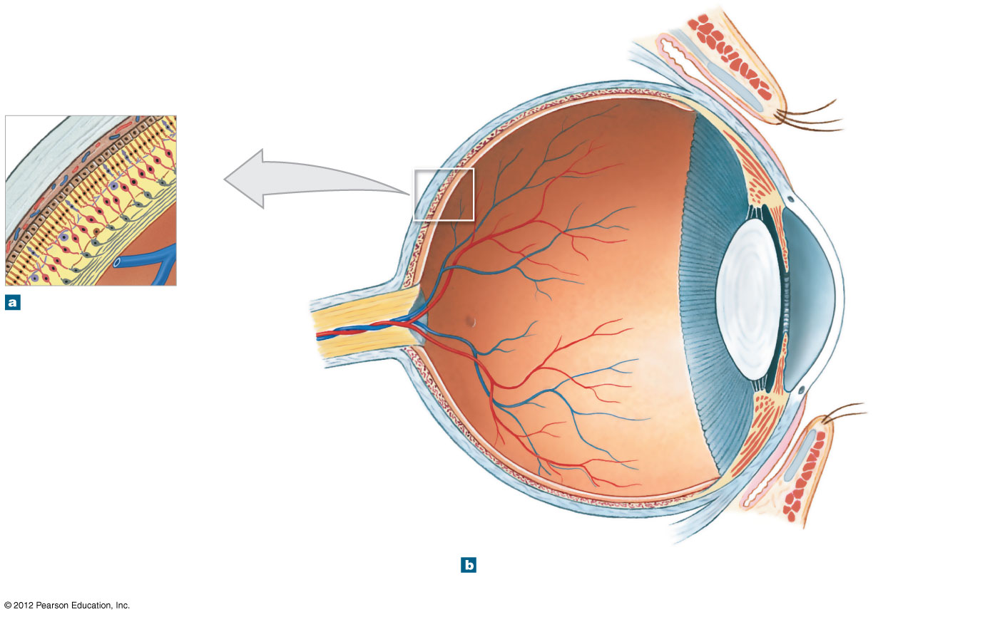
2.2 · Objective 2 — Extra-ocular muscles and their innervations
Six extra-ocular (extrinsic) muscles move each eyeball, innervated by three cranial nerves — the "LR6 SO4, rest 3" rule: the lateral rectus (abducts the eye) is supplied by CN VI (abducens); the superior oblique (depresses and intorts the abducted eye) is supplied by CN IV (trochlear); and the remaining four — the superior rectus, inferior rectus, medial rectus, and inferior oblique — are all supplied by CN III (oculomotor), which also raises the eyelid (levator palpebrae superioris).
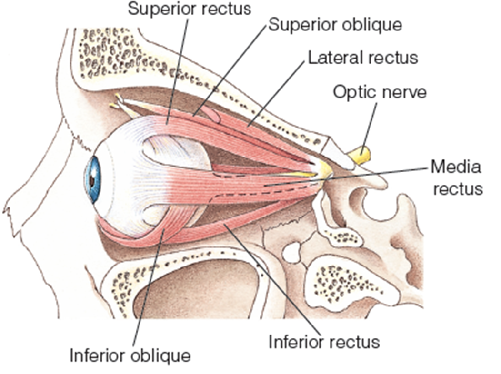
2.3 · Objective 3 — The lacrimal system
The lacrimal apparatus produces and drains tears. The lacrimal gland, superolateral to the eye, secretes tears that wash medially across the eye's surface. They collect at the medial canthus and enter the lacrimal puncta → lacrimal canaliculi → lacrimal sac → nasolacrimal duct, which drains into the inferior meatus of the nasal cavity (why crying produces a runny nose).
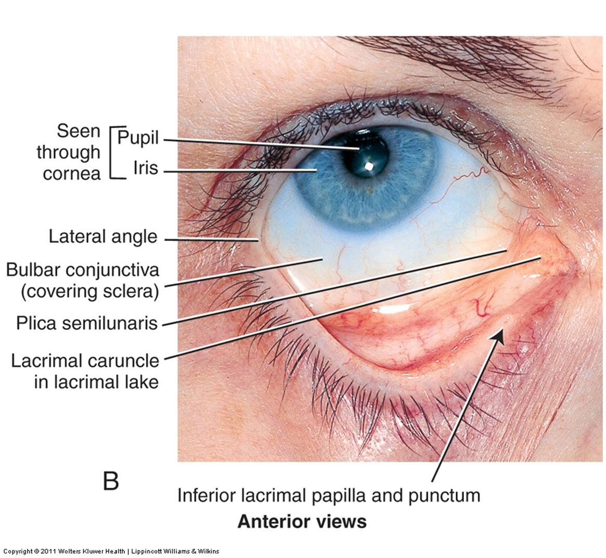
2.4 · Objective 4 — External, middle, and inner ear
The external ear — the auricle (pinna) and external acoustic meatus — funnels sound to the tympanic membrane (eardrum). The air-filled middle ear (tympanic cavity) holds the three auditory ossicles — malleus (on the eardrum), incus, and stapes (footplate in the oval window) — which amplify and transmit vibration inward; the auditory (Eustachian) tube connects it to the nasopharynx to equalize pressure. The inner ear is a rigid bony labyrinth (perilymph) housing the membranous labyrinth (endolymph). Its hearing organ, the cochlea, has three channels — scala vestibuli and scala tympani (perilymph) around the scala media (endolymph), which holds the organ of Corti (hair cells that transduce sound). Its balance organ, the vestibular complex, uses the utricle and saccule (linear acceleration/tilt via otoliths) and the three semicircular canals (angular acceleration via hair cells in each ampulla). Both feed CN VIII (vestibulocochlear).
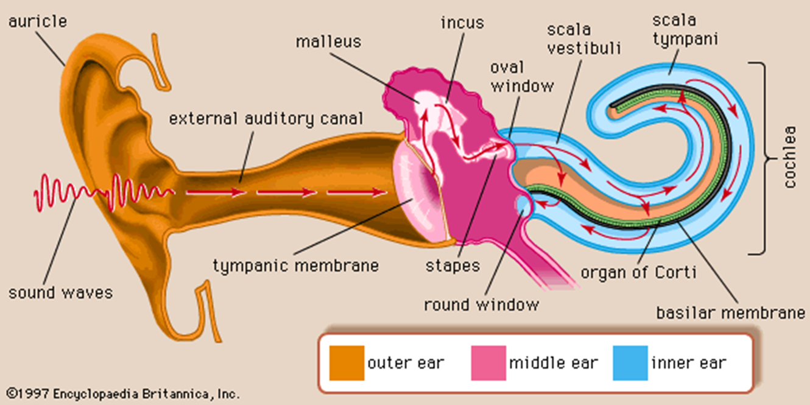
3 · Anatomy of the Heart and Great Vessels
Instructional Objectives
- Compare and contrast the external and internal anatomical structures of the heart.
- Identify the origin and course and the main branches of the main coronary arteries.
- Describe the cardiac nerve supply and distribution.
- Explain the anatomical components of the cardiac conduction system.
- Describe the entire course of the aorta and name the origin of the major branches of each division.
- Describe the origins, course and relationships of the brachiocephalic veins and superior vena cava.
3.1 · Objective 1 — External and internal structures of the heart
Externally, the heart sits in the mediastinum with its apex pointing left-anterior-inferior, enclosed by the pericardium: a tough fibrous pericardium and a two-layered serous pericardium (parietal layer lining the sac, visceral layer/epicardium on the heart), with lubricating fluid in the pericardial cavity between. The heart wall has three layers — epicardium, thick contractile myocardium (reinforced by a fibrous skeleton that anchors the valves and insulates atria from ventricles), and inner endocardium. Internally are four chambers: two thin-walled atria (right receives the venae cavae and coronary sinus; left receives the pulmonary veins) and two thick ventricles (right pumps to the pulmonary trunk; the very muscular left pumps to the aorta). One-way flow is enforced by atrioventricular valves — tricuspid (right) and bicuspid/mitral (left), held by chordae tendineae anchored to papillary muscles — and by the semilunar valves (pulmonary and aortic), whose cusps need no chordae.
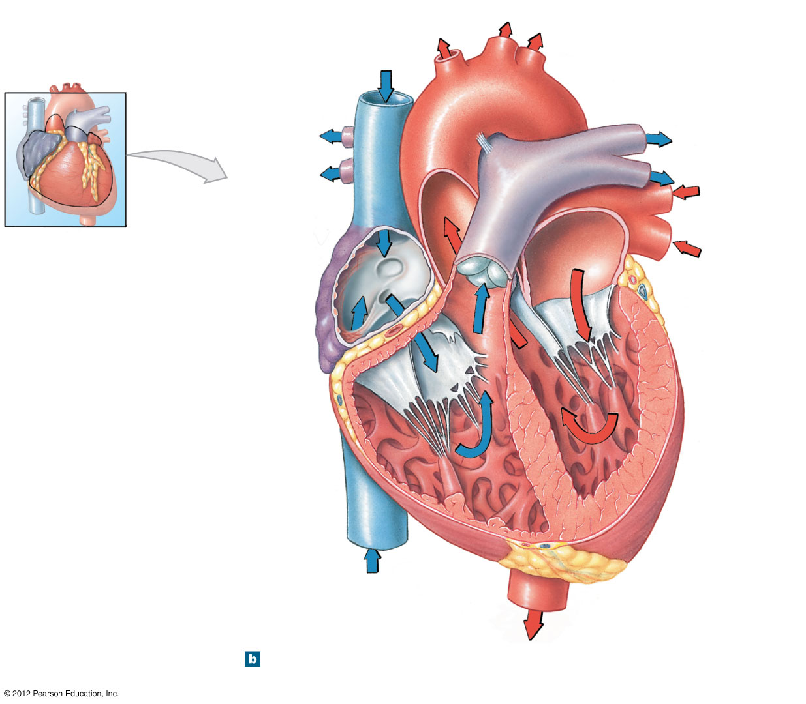
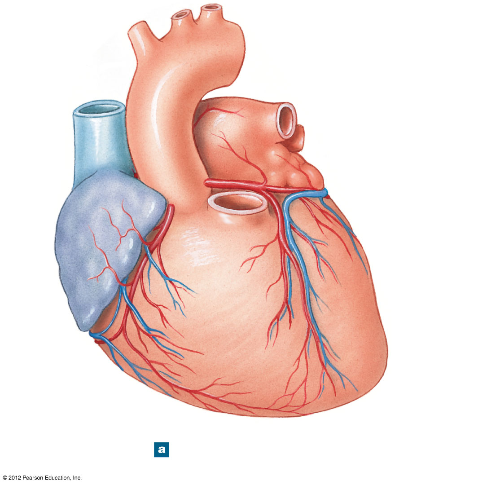
3.2 · Objective 2 — Coronary arteries: origin, course, branches
The coronary arteries are the first branches of the ascending aorta, arising just above the aortic valve. The left coronary artery (LCA) courses left in the coronary groove and divides into the anterior interventricular artery (LAD) (runs down the anterior interventricular groove, supplying the anterior septum and much of the left ventricle) and the circumflex artery (wraps left around to the posterior heart). The right coronary artery (RCA) runs right in the coronary groove, giving off a right marginal branch and, in most people, the posterior interventricular (posterior descending) artery, supplying the right ventricle and typically the SA and AV nodes. Venous blood parallels these arteries and drains via the coronary sinus into the right atrium.
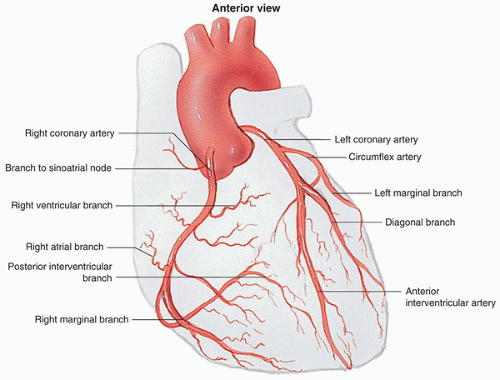
3.3 · Objective 3 — Cardiac nerve supply and distribution
The heart receives autonomic (not voluntary) innervation through the cardiac plexus at the base of the heart, which modulates but does not initiate the beat. Sympathetic fibers (from the upper thoracic spinal cord via the sympathetic trunk, as the cardiac nerves) increase heart rate and contractile force, distributing to the SA node, AV node, and myocardium. Parasympathetic fibers travel in the vagus nerve (CN X) and decrease heart rate, distributing mainly to the SA and AV nodes. Visceral afferents for pain (ischemia) also run with the sympathetic fibers, explaining referred cardiac pain.
3.4 · Objective 4 — Cardiac conduction system
The heartbeat is generated and coordinated by specialized myocardium. The sinoatrial (SA) node in the right atrial wall is the intrinsic pacemaker, firing an impulse across both atria. The signal converges on the atrioventricular (AV) node, which briefly delays it (letting the atria finish contracting), then passes to the AV bundle (bundle of His), splits into the right and left bundle branches in the interventricular septum, and spreads through the ventricular walls via Purkinje fibers — producing a coordinated apex-to-base ventricular contraction. This drives the cardiac cycle's systole (AV valves close, S1) and diastole (semilunar valves close, S2).
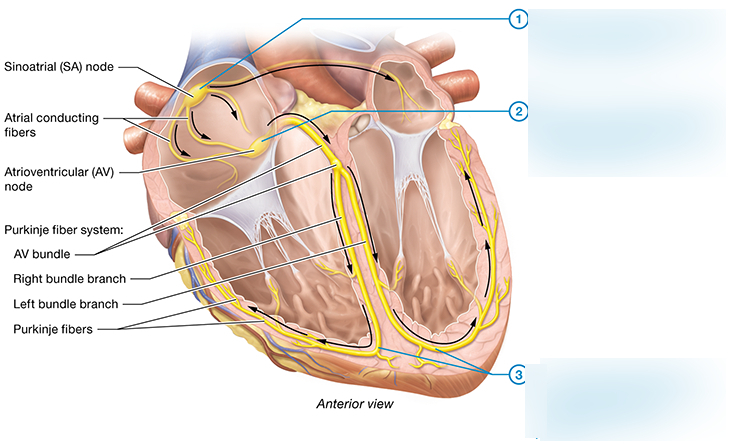
3.5 · Objective 5 — Course of the aorta and its branches
The aorta is traced in four divisions. The ascending aorta gives off only the coronary arteries. The aortic arch gives three branches: the brachiocephalic trunk (→ right subclavian + right common carotid), the left common carotid, and the left subclavian. The thoracic (descending) aorta gives paired posterior intercostal, bronchial, and esophageal branches before passing the diaphragm's aortic hiatus. The abdominal aorta gives three unpaired midline gut branches — the celiac trunk (foregut), superior mesenteric artery (midgut), and inferior mesenteric artery (hindgut) — plus paired renal and gonadal arteries, then bifurcates into the paired common iliac arteries (each → internal iliac to the pelvis and external iliac continuing as the femoral artery).
3.6 · Objective 6 — Brachiocephalic veins and superior vena cava
Each brachiocephalic (innominate) vein forms behind the sternoclavicular joint from the union of the internal jugular vein and subclavian vein of that side, thereby draining the head, neck, and upper limb. The right brachiocephalic vein is short and nearly vertical; the left brachiocephalic vein is longer and passes obliquely across the midline, anterior to the aortic arch's three branches, to join its partner. The two unite behind the right first costal cartilage to form the superior vena cava (SVC), which descends in the superior/middle mediastinum (receiving the azygos vein just before entering) and empties into the right atrium. The SVC lies to the right of the ascending aorta, with the right phrenic nerve and lung to its right.
4 · Arteries, Veins, and Lymphatics System
Instructional Objectives
- Compare and contrast the histology of the components of the vascular system.
- Describe the distribution and courses of major vessels.
- Identify the surface markings of the major vessels of the thorax, abdomen, and lower and upper extremities.
- Identify the azygos system of veins.
- Compare and contrast the cell types within blood and lymphatics.
- Compare and contrast the organs that comprise the lymphatic system.
- Compare and contrast the anatomical structures of the lymphatic system.
4.1 · Objective 1 — Histology of the vascular components
Vessel walls share three layers: an inner tunica intima (endothelium + thin connective tissue), a middle tunica media (smooth muscle and elastic fibers), and an outer tunica externa (adventitia). Arteries have a thick media and grade from elastic (conducting) arteries (aorta and great branches — elastic recoil smooths flow), to muscular (distributing) arteries (most named arteries), to arterioles (resistance vessels controlling flow into capillary beds). Capillaries are a single endothelial layer, thin enough for exchange. Veins, by contrast, have thinner walls, larger lumens, and (especially in limbs) one-way venous valves.
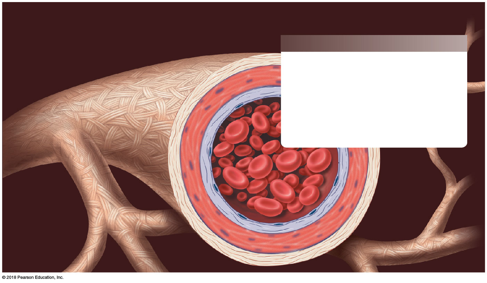
4.2 · Objective 2 — Distribution and courses of major vessels
The aorta distributes systemic arterial blood (its four divisions and branches are traced in Section 3.5). Major arterial courses continue as the subclavian → axillary → brachial (dividing into radial and ulnar) in the upper limb, and the external iliac → femoral → popliteal (dividing into anterior/posterior tibial) in the lower limb. Venous return converges centrally: the head/neck/upper limbs drain via the paired brachiocephalic veins into the superior vena cava, while the lower body drains into the inferior vena cava — both emptying into the right atrium. Because venous pressure is low, return is assisted by the skeletal muscle pump and respiratory pump, directed one-way by venous valves.
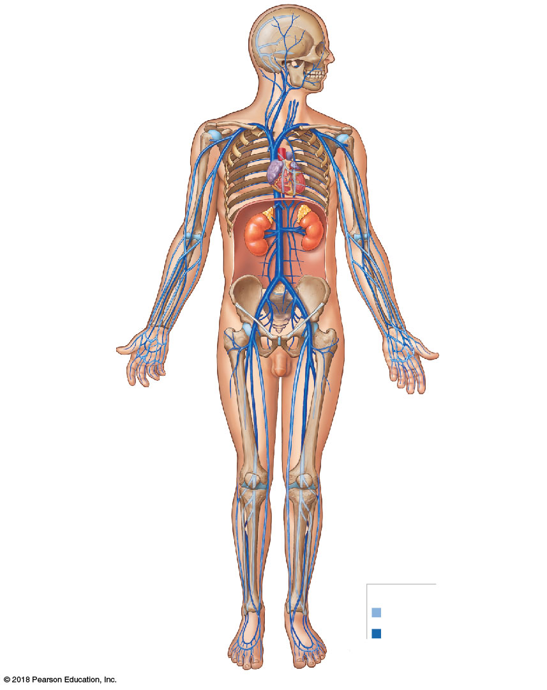
4.3 · Objective 3 — Surface markings of major vessels
Major vessels have palpable/projectable surface landmarks. Thorax: the aortic arch lies behind the manubrium, and the common carotid pulse is felt along the anterior border of the sternocleidomastoid. Upper extremity: the axillary artery in the axilla, the brachial artery along the medial arm and at the cubital fossa (blood-pressure auscultation), the radial artery at the lateral wrist, and the ulnar artery medially. Abdomen: the abdominal aorta projects in the midline from roughly the xiphisternum to its bifurcation at about the umbilicus (L4). Lower extremity: the femoral artery at the mid-inguinal point (halfway between the anterior superior iliac spine and pubic symphysis), the popliteal artery in the popliteal fossa, the posterior tibial artery behind the medial malleolus, and the dorsalis pedis on the dorsum of the foot.
4.4 · Objective 4 — The azygos system of veins
The azygos system drains the posterior thoracic and abdominal walls and forms an important collateral pathway between the superior and inferior venae cavae. The azygos vein ascends on the right side of the vertebral column and arches over the root of the right lung to empty into the superior vena cava. On the left, the hemiazygos and accessory hemiazygos veins ascend and cross the midline to join the azygos. If the inferior vena cava is obstructed, blood can be rerouted through this system back to the heart.
4.5 · Objective 5 — Cell types within blood and lymphatics
Whole blood is plasma (~55%: water, electrolytes, plasma proteins — albumin, globulins, clotting factors) plus formed elements (~45%): red blood cells (erythrocytes) (biconcave, anucleate, carry O2 via hemoglobin — most numerous), white blood cells (leukocytes) (neutrophils, lymphocytes, monocytes, eosinophils, basophils), and platelets (clotting fragments). Lymph is similar interstitial-derived fluid but, in contrast, carries essentially no red blood cells and is dominated by lymphocytes (T and B cells) for immune surveillance.
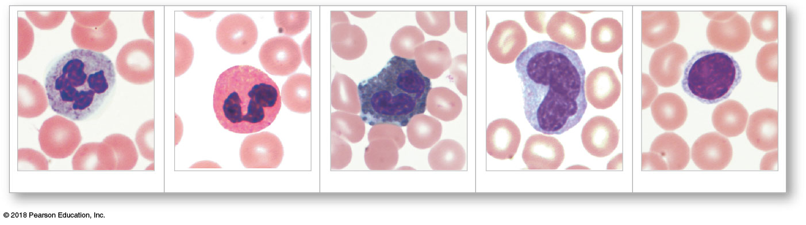
4.6 · Objective 6 — Organs of the lymphatic system
The lymphoid organs differ in role. The red bone marrow and thymus are primary organs where lymphocytes form and mature (T-cells mature in the thymus). The secondary organs house mature cells for immune responses: the spleen (filters blood and responds to blood-borne pathogens), lymph nodes (filter lymph along the vessels), the tonsils (guard the pharyngeal inlet), and mucosa-associated lymphoid tissue such as the Peyer's patches of the gut.
4.7 · Objective 7 — Anatomical structures of the lymphatic system
Lymph flows through a one-way vessel hierarchy. It begins in blind-ended, highly permeable lymphatic capillaries, passes into valved lymphatic vessels that filter through lymph nodes, and collects into lymphatic trunks. These converge into two ducts: the large thoracic duct (draining everything below the diaphragm — beginning at the cisterna chyli — plus the entire left upper body, emptying at the junction of the left internal jugular and left subclavian veins) and the smaller right lymphatic duct (draining the right upper body into the corresponding right venous junction). Lacking a central pump, lymph is moved by the skeletal-muscle and respiratory pumps plus rhythmic smooth-muscle contraction, all directed by internal valves.
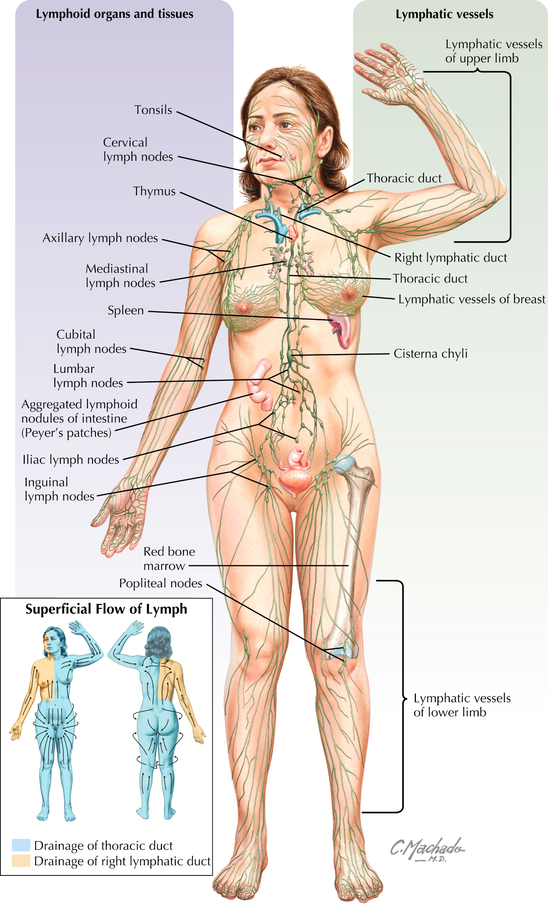
5 · Pulmonary System
Instructional Objectives
- Compare and contrast the organs that comprise the respiratory system.
- Describe the anatomical structures of the organs of the respiratory system.
- Describe the anatomic relations of each organ of the respiratory system and the surrounding anatomy.
- Compare and contrast the segments of the trachea and bronchi.
- Discuss segments of the pleura, and pleural cavity.
- Identify the blood, nerve, and lymphatic supply of the thorax.
- Identify the major sections of the diaphragm including the hiati of the diaphragm.
5.1 · Objective 1 — Organs of the respiratory system compared
The respiratory system (functions: gas exchange, pH regulation, protection from inhaled particles, sound production, olfaction) divides into an upper respiratory tract (nose and nasal cavity, pharynx, larynx) and a lower respiratory tract (trachea, bronchi, lungs). Functionally the airway also splits into a conducting zone (nose through terminal bronchioles — moves and conditions air, no gas exchange) and a respiratory zone (respiratory bronchioles, alveolar ducts, and alveoli — where gas exchange occurs). The lungs are the paired organs of exchange; the other organs condition, conduct, and protect the airstream.
5.2 · Objective 2 — Anatomical structures of the organs
The nasal cavity, split by the nasal septum and lined by ciliated pseudostratified columnar respiratory epithelium with goblet cells, warms, humidifies, and filters air. The pharynx has three parts: nasopharynx (pharyngeal tonsil, auditory tube opening), oropharynx (palatine/lingual tonsils), and laryngopharynx. The larynx is a cartilaginous airway: unpaired thyroid (laryngeal prominence), cricoid (the only complete ring), and leaf-shaped elastic epiglottis, plus paired arytenoid, corniculate, and cuneiform cartilages; the vocal folds (true cords) and the rima glottidis form the glottis for phonation. The trachea is held open by ~15–20 C-shaped hyaline cartilage rings (posterior gap bridged by trachealis muscle). The bronchial tree branches to the alveoli, lined by thin type I pneumocytes (diffusion) and surfactant-secreting type II pneumocytes.
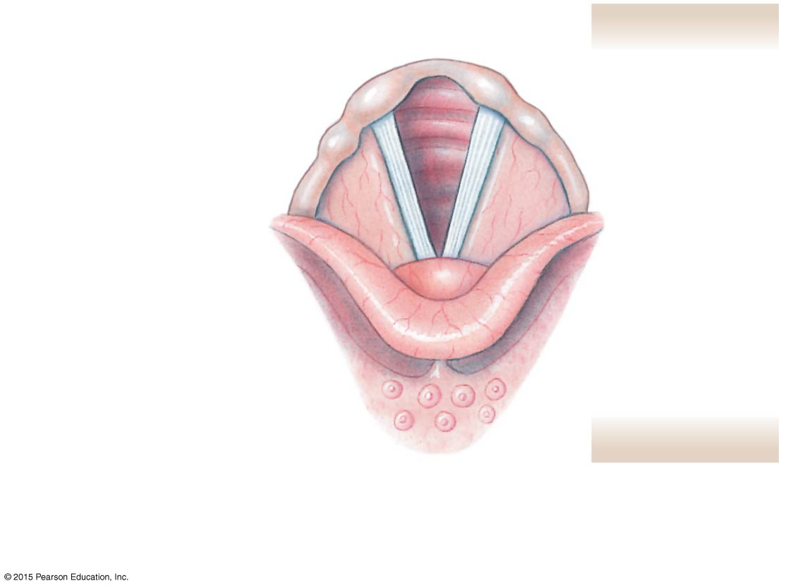
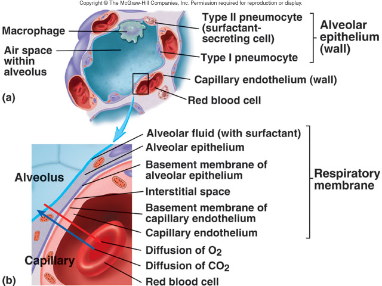
5.3 · Objective 3 — Anatomic relations to surrounding anatomy
The trachea descends in the neck and superior mediastinum directly anterior to the esophagus and posterior to the great vessels, bifurcating at the sternal angle (T4/T5). The right main bronchus is wider, shorter, and more vertical than the left — the more common site of foreign-body aspiration. The right lung has three lobes (oblique + horizontal fissures); the left lung has two lobes (single oblique fissure), plus a cardiac notch and lingula reflecting the heart's leftward position. On each lung's medial surface, the hilum transmits the bronchus, pulmonary and bronchial vessels, and nerves — collectively the root of the lung.
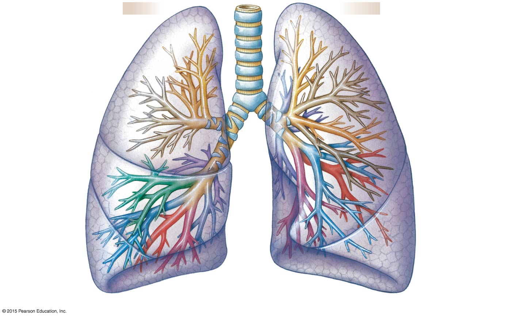
5.4 · Objective 4 — Segments of the trachea and bronchi compared
The trachea is a single conducting tube with incomplete cartilage rings. It divides into the primary (main) bronchi (one per lung), which branch into secondary (lobar) bronchi (three on the right, one per lobe; two on the left), then tertiary (segmental) bronchi — each supplying an independent, surgically resectable bronchopulmonary segment. Branching continues into bronchioles → terminal bronchioles (end of the conducting zone) → respiratory bronchioles → alveolar ducts → alveoli. As airways narrow, cartilage is progressively lost and smooth muscle proportionally increases.
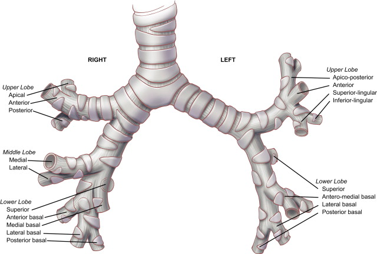
5.5 · Objective 5 — The pleura and pleural cavity
Each lung is wrapped in visceral pleura and enclosed by parietal pleura lining the thoracic wall; the potential space between, the pleural cavity, holds lubricating pleural fluid whose surface tension couples the lung to the chest wall. The parietal pleura is named by region: costal (inner ribs), mediastinal (against the mediastinum), diaphragmatic (on the diaphragm), and cervical (cupula) (over the lung apex). Where costal meets diaphragmatic pleura, the costodiaphragmatic recess forms a dependent space the lung expands into during deep inspiration (and where pleural fluid collects).
5.6 · Objective 6 — Blood, nerve, and lymphatic supply of the thorax
Blood: the lungs have a dual supply — pulmonary arteries carry deoxygenated blood to the alveoli for gas exchange, while bronchial arteries (from the thoracic aorta) supply oxygenated blood to the lung tissue itself; the thoracic wall is supplied by posterior intercostal arteries. Nerve: the phrenic nerve (C3–C5) supplies the diaphragm, the vagus (CN X) and sympathetic fibers form the pulmonary plexus (bronchoconstriction/dilation, secretion), and intercostal nerves supply the thoracic wall. Lymphatic: lung lymph drains through pulmonary and bronchopulmonary (hilar) nodes to tracheobronchial and mediastinal nodes, then into the bronchomediastinal trunks.
5.7 · Objective 7 — Sections of the diaphragm and its hiati
The diaphragm is the primary muscle of inspiration, with a central tendon and three peripheral muscular origins: a sternal part (from the xiphoid), a costal part (from the lower ribs), and a lumbar part (from the crura on the upper lumbar vertebrae and the arcuate ligaments). It is pierced by three major hiati at different levels: the caval opening (T8 — inferior vena cava), the esophageal hiatus (T10 — esophagus and vagus nerves), and the aortic hiatus (T12 — aorta, thoracic duct, azygos vein). A memory aid: the level roughly matches the letter count — vena cava (8), esophagus (10), aortic (12).
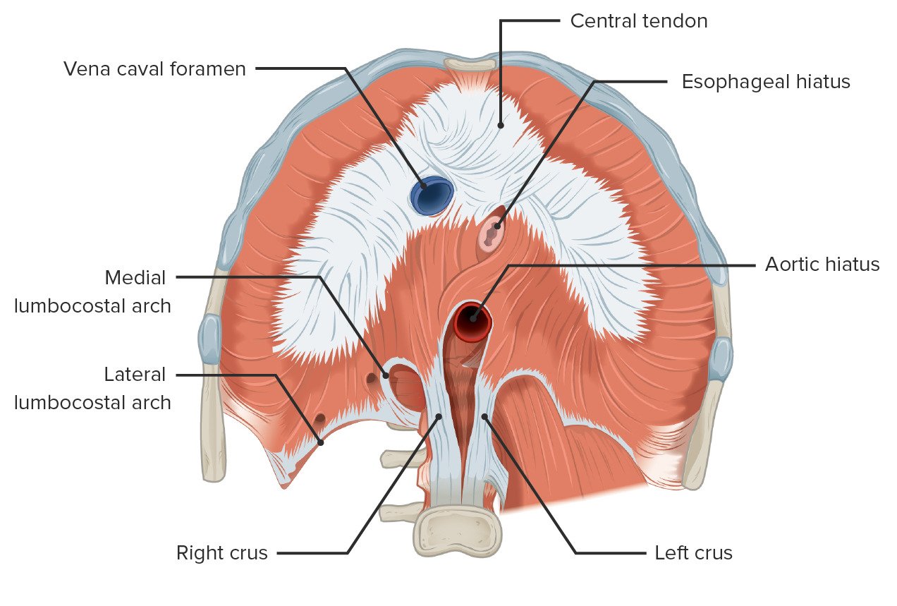